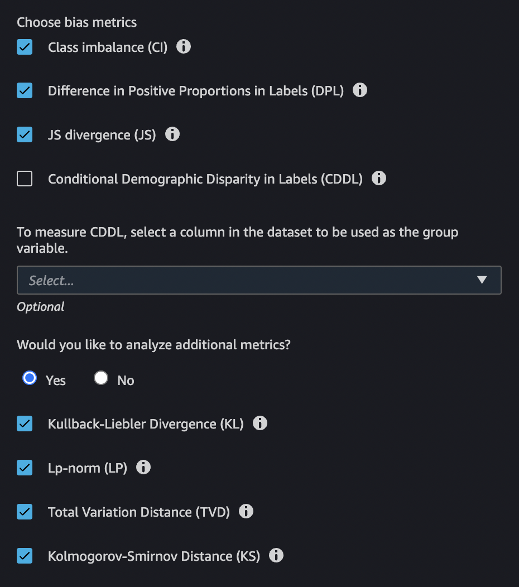
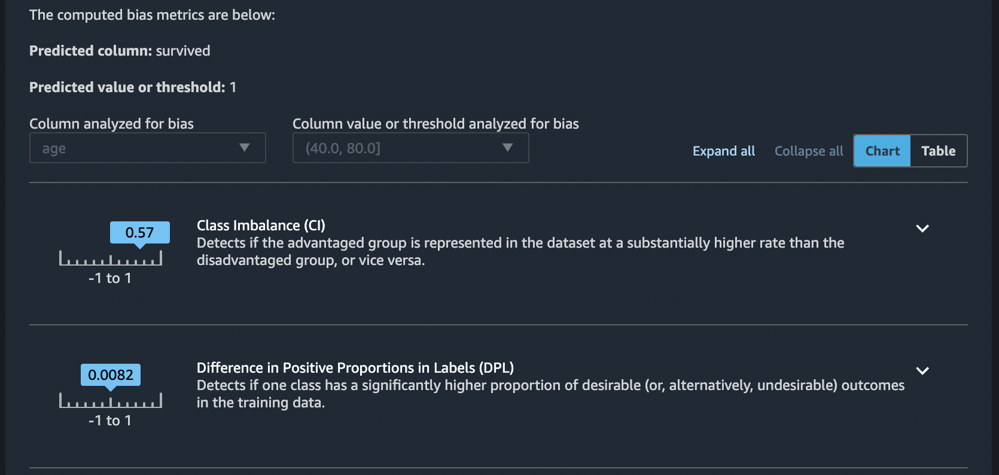

Generate Reports for Bias in Pre-training Data in SageMaker Studio
SageMaker Clarify is integrated with Amazon SageMaker Data Wrangler, which can help you identify bias during data preparation without having to write your own code. Data Wrangler provides an end-to-end solution to import, prepare, transform, featurize, and analyze data with Amazon SageMaker Studio. For an overview of the Data Wrangler data prep workflow, see Prepare ML Data with Amazon SageMaker Data Wrangler.
You specify attributes of interest, such as gender or age, and SageMaker Clarify runs a set of algorithms to detect the presence of bias in those attributes. After the algorithm runs, SageMaker Clarify provides a visual report with a description of the sources and severity of possible bias so that you can plan steps to mitigate. For example, in a financial dataset that contains few examples of business loans to one age group as compared to others, SageMaker flags the imbalance so that you can avoid a model that disfavors that age group.
To analyze and report on data bias
To get started with Data Wrangler, see Get Started with Data Wrangler.
-
In Amazon SageMaker Studio, from the Home (
 ) menu in the left panel,
navigate to the Data node, then choose
Data Wrangler. This opens the Data Wrangler
landing page in Studio.
) menu in the left panel,
navigate to the Data node, then choose
Data Wrangler. This opens the Data Wrangler
landing page in Studio.
-
Choose the + Import data button to create a new flow.
-
In your flow page, from the Import tab, choose Amazon S3, navigate to your Amazon S3 bucket, find your dataset, then choose Import.
-
After you have imported your data, on the flow graph in the Data flow tab, choose the + sign to the right of the Data types node.
-
Choose Add analysis.
-
On the Create Analysis page, choose Bias Report for the Analysis type.
-
Configure the bias report by providing a report Name, the column to predict and whether it is a value or threshold, the column to analyze for bias (the facet) and whether it is a value or threshold.
-
Continue configuring the bias report by choosing the bias metrics.
 -
Choose Check for bias to generate and view the bias report. Scroll down to view all of the reports.
 -
Choose the caret to the right of each bias metric description to see documentation that can help you interpret the significance of the metric values.
-
To view a table summary of the bias metric values, choose the Table toggle. To save the report, choose Save in the lower-right corner of the page. You can see the report on the flow graph in the Data flow tab. Double-click on the report to open it.